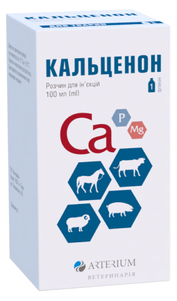
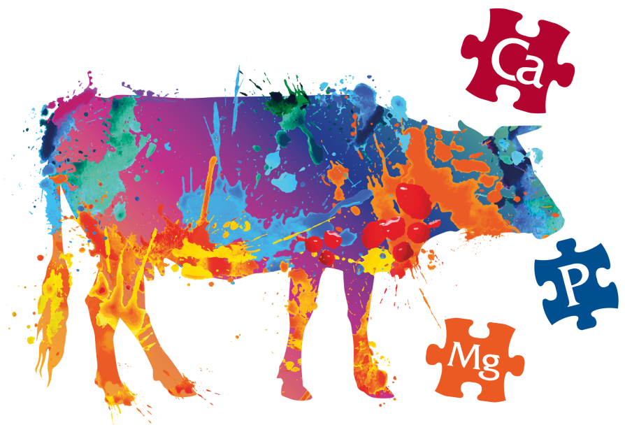
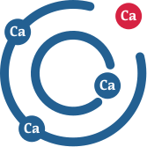
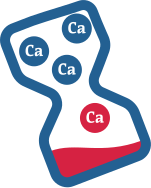
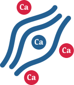

Кальценон
комплексний вітчизняний мінеральний препарат, що застосовується для лікування і профілактики парезів сільськогосподарських тварин, пов'язаних з нестачею кальцію, фосфору та магнію*5
*5. Листівка-вкладка препарату Кальценон, розчин для ін’єкції.

Порушення обміну кальцію у високопродуктивних корів виникає через
великі його втрати на початку лактації з молозивом*6
*6. Левченко В. І. Патогенез і профілактика післяродової
гіпокальціємії корів / В. І. Левченко, О. С. Петренко //
Біологія тварин. — 2008. — Т. 10, № 1/2. — С. 49–63.

Корова втрачає з 10 літрами молозива 23 г кальцію за перше доїння,
що в 9 разів більше ніж міститься у плазмі крові (2,5–3г)!*6
*6. Левченко В. І. Патогенез і профілактика післяродової
гіпокальціємії корів / В. І. Левченко, О. С. Петренко //
Біологія тварин. — 2008. — Т. 10, № 1/2. — С. 49–63.

Ліквідувати дефіцит кальцію в короткий термін організм не може,
тому іони кальцію вивільняються з м’язової тканини і, як наслідок,
розвивається парез м’язів!*1
*1. Goff J. P. Recurring hypocalcaemia of bovine parturient
paresis in associated with failure to produce
1,25-dihydrooxyvitamin D / Рецидивуюча гіпокальціємія при парезі
породіллі великої рогатої худоби, пов'язана з нездатністю
виробляти 1,25-дигідрооксивітамін D /J. P. Goff, T.A. Reinhardt,
R.L.Horst // Endocrinology. — 1989. — Vol. 125. — P. 49–53.
Реклама ветеринарного препарату. Рекомендовано проводити лікування в домашніх умовах після консультації з ветеринарним лікарем. Інформацію наведено в скороченому вигляді, повна інформація викладена в листівці-вкладці препарату Кальценон, розчин для ін’єкцій. РП: АВ-05064-01-14 від 03.11.23 до 02.11.2028. Власник РП і Виробник: АТ «Галичфарм», Україна, 79024, м. Львів, вул. Опришківська 6/8.